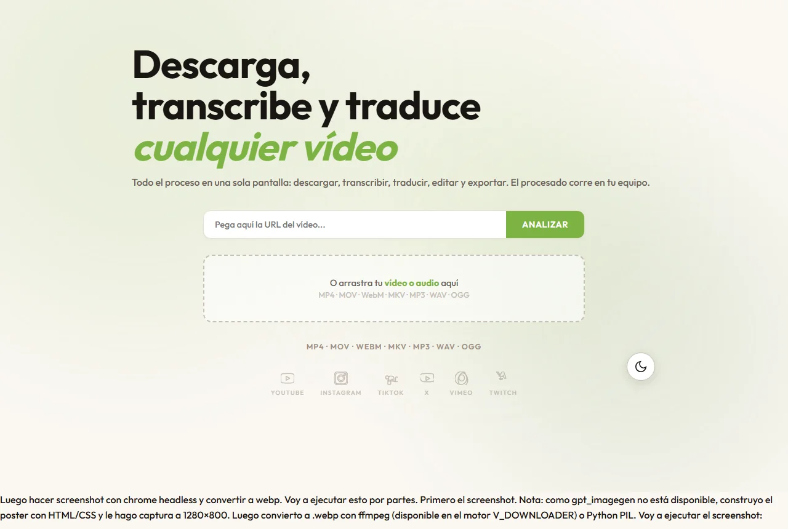

Para quién
- Creadores de contenido que subtitulan o traducen sus vídeos para redes
- Quien necesita el texto de una charla, una clase o un tutorial
Herramienta para descargar, transcribir y traducir vídeos con IA, con un editor de subtítulos con línea de tiempo, estilos y exportación.
La web pública muestra la interfaz, pero no procesa enlaces ni archivos. El motor de descarga y procesamiento no está conectado a este sitio.
Para sacar subtítulos o traducir un vídeo había que encadenar varias herramientas: una para descargar, otra para transcribir y otra para editar.
Cada una tenía su formato, su cuenta y su límite, y el resultado casi nunca salía con el estilo de subtítulo que quería.
Quería todo en una sola pantalla, y que el procesado se hiciera en mi equipo.
Pegas un enlace o arrastras un archivo (MP4, MOV, WebM, MKV, MP3, WAV u OGG) y eliges la calidad.
Transcribe el audio con Whisper, puede leer el texto que sale en pantalla (OCR) y traduce a 16 idiomas.
Ajustas los subtítulos en una línea de tiempo con fuente, color, contorno, posición y resaltado palabra a palabra.
Descargas el archivo SRT o renderizas el vídeo con los subtítulos ya puestos.

Abrir la web ↗Deshacer y rehacer, zoom en la línea de tiempo y vista previa del estilo.
Whisper transcribe el audio y un modelo de IA local (Ollama) traduce los subtítulos a 16 idiomas. Nada se sube a ningún servicio.
Enlaces de YouTube, Vimeo, Twitch y otras plataformas, desde 360p hasta 4K cuando la plataforma lo ofrece, y listas completas como colección. Para vídeos que piden sesión, usa las cookies de tu navegador.
Cinco familias de letra, tamaño, color, negrita, cursiva, contorno, fondo con opacidad, posición, alineación y resaltado palabra a palabra.
El producto entero, probado con mis propios vídeos:
Interfaz publicada. El procesado funciona en local y no está publicado.
Pulir el editor de subtítulos y decidir cómo ofrecer el procesado fuera de mi equipo.